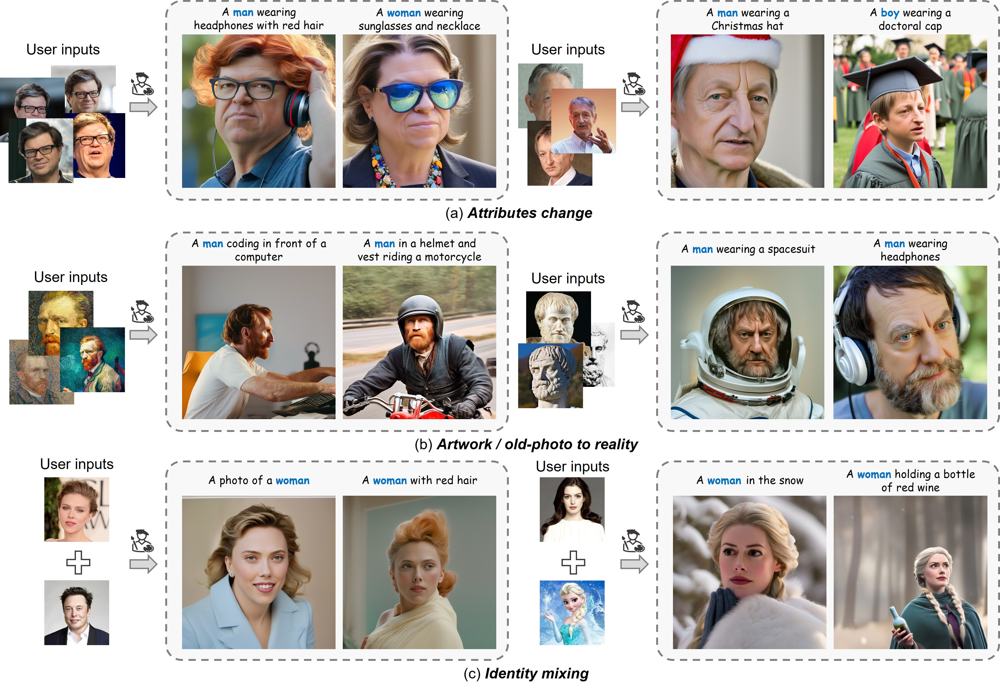

PhotoMaker: Customizing Realistic Human Photos via Stacked ID Embedding
* Interns in ARC Lab, Tencent PCG ✉ Corresponding Authors

Recent advances in text-to-image generation have made remarkable progress in synthesizing realistic human photos conditioned on given text prompts. However, existing personalized generation methods cannot simultaneously satisfy the requirements of high efficiency, promising identity (ID) fidelity, and flexible text controllability. In this work, we introduce PhotoMaker, an efficient personalized text-to-image generation method, which mainly encodes an arbitrary number of input ID images into a stack ID embedding for preserving ID information. Such an embedding, serving as a unified ID representation, can not only encapsulate the characteristics of the same input ID comprehensively, but also accommodate the characteristics of different IDs for subsequent integration. This paves the way for more intriguing and practically valuable applications. Besides, to drive the training of our PhotoMaker, we propose an ID-oriented data construction pipeline to assemble the training data. Under the nourishment of the dataset constructed through the proposed pipeline, our PhotoMaker demonstrates better ID preservation ability than test-time fine-tuning based methods, yet provides significant speed improvements, high-quality generation results, strong generalization capabilities, and a wide range of applications.
Our method takes as input a few images (typically 3-5 images suffice, based on our experiments) of a subject (e.g., a specific dog) and the corresponding class name (e.g. "dog"), and returns a fine-tuned/"personalized'' text-to-image model that encodes a unique identifier that refers to the subject. Then, at inference, we can implant the unique identifier in different sentences to synthesize the subjects in difference contexts.

We first obtain the text embedding and image embeddings from text encoder(s) and image encoder, respectively. Then, we extract the fused embedding by merging the corresponding class embedding (e.g., man and woman) and each image embedding. Next, we concatenate all fused embeddings along the length dimension to form the stacked ID embedding. Finally, we feed the stacked ID embedding to all cross-attention layers for adaptively merging the ID content in the diffusion model. Note that although we use images of the same ID with the masked background during training, we can directly input images of different IDs without background distortion to create a new ID during inference.
Results for re-contextualization of a bag and vase subject instances. By finetuning a model using our method we are able to generate different images of the a subject instance in different environments, with high preservation of subject details and realistic interaction between the scene and the subject. We display the conditioning prompts below each image.

Results for re-contextualization of a bag and vase subject instances. By finetuning a model using our method we are able to generate different images of the a subject instance in different environments, with high preservation of subject details and realistic interaction between the scene and the subject. We display the conditioning prompts below each image.

Outfitting a dog with accessories. The identity of the subject is preserved and many different outfits or accessories can be applied to the dog given a prompt of type "a [V] dog wearing a police/chef/witch outfit''. We observe a realistic interaction between the subject dog and the outfits or accessories, as well as a large variety of possible options.

Results for re-contextualization of a bag and vase subject instances. By finetuning a model using our method we are able to generate different images of the a subject instance in different environments, with high preservation of subject details and realistic interaction between the scene and the subject. We display the conditioning prompts below each image.

Original artistic renditions of our subject dog in the style of famous painters. We remark that many of the generated poses were not seen in the training set, such as the Van Gogh and Warhol rendition. We also note that some renditions seem to have novel composition and faithfully imitate the style of the painter - even suggesting some sort of creativity (extrapolation given previous knowledge).


We show color modifications in the first row (using prompts ``a [color] [V] car''), and crosses between a specific dog and different animals in the second row (using prompts ``a cross of a [V] dog and a [target species]''). We highlight the fact that our method preserves unique visual features that give the subject its identity or essence, while performing the required property modification.

@article{li2023photomaker,
title={PhotoMaker: Customizing Realistic Human Photos via Stacked ID Embedding},
author={Li, Zhen and Cao, Mingdeng and Wang, Xintao and Qi, Zhongang and Cheng, Ming-Ming and Shan, Ying},
booktitle={arXiv preprint arxiv:2312.12242},
year={2023}
}
Our project page is borrowed from DreamBooth.